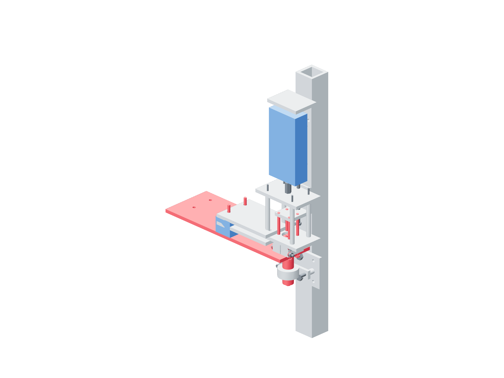

Preparation / shaft qualification41 / 179
Build the axial capture proof fixture
Prove the actual end washers, threads, tubes and bearing inner races before carrying a frame. The complete bare axis uses its real output plate; the gun and gravity payload stay independently supported.
AddReuse completed bare axis / 500 mm column · two capture-bearing-riser tubes · joined catch plates / two 7.85 mm tubes / two borrowed M5 × 35
Tools / setupBoth supplies unplugged · drill motor unplugged · independent catches · actual-axis source dimensions

- Brace the reused 500 mm column vertically. The canonical 85 mm shaft uses bearing center u = 65 mm, two 12.825 mm metal risers, M6 × 40 bearing bolts and M8 × 16 / slot8 foot joints; other axes retain their actual bearing separation.
- Install the actual output plate, shaft and finished service tubes/keepers. Restore measured end-bolt reach and the bounded axial clearance.
- Join drive-test-foot and capture-catch-upper at their far ends with the two 7.85 mm tubes / M5 × 35 joints. Grip only the joined far metal in the anchored vise. Set nominal 0.75 mm gaps above/below the interface, clear of shaft and keeper.
- Grade catch gaps so actual capture plus elastic movement clears them and their secondary bound is ≤1 mm. After securing this support, loosen hub clamps / bearing setscrews enough to remove axial friction grip.
- Verify smooth free movement within the recorded capture gap. Record bearing positions and keeper witnesses; the actual end keepers and every service tube stay installed.
Ready when
Axial force can pass through the actual plate, retained metal stacks, end threads and inner races; clamp friction, support and catch carry no proof load. A substitute plate, eccentric contact, friction bypass or fixture/case contact fails the setup. Support/unload the axis and correct its actual reaction path.